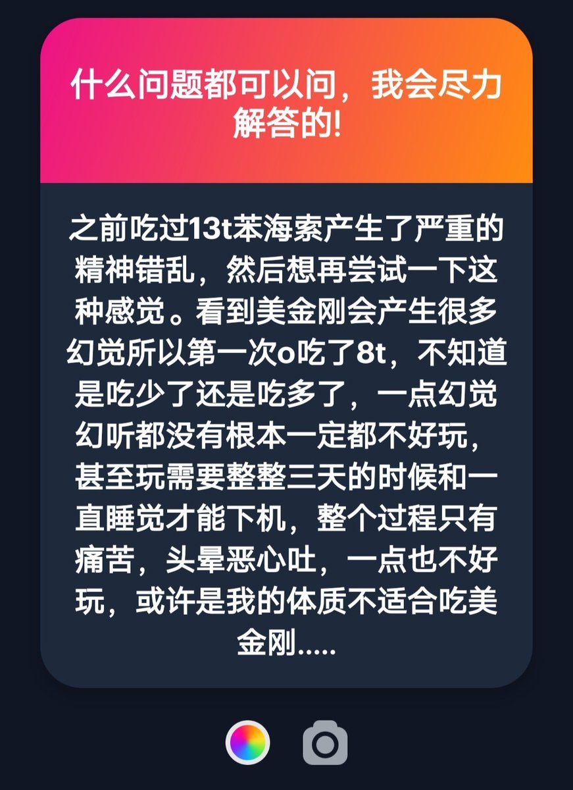

这又回到我的置顶post了: 下机药是多么多么重要


我发现一个问题就是很多人不知道美金刚药效持续那么久要怎么阻断)
推荐的下机药有苯二氮卓类，z药物，喹硫平
最主要的是要睡着，然后睡起来药效基本就没有了(我个人经历)
特别是美金刚微弱的兴奋效果可能带来睡眠剥夺，在缺少睡眠的情况下药物代谢更慢，故副作用会持续更久。 https://t.co/HUDk5475ib
推荐的下机药有苯二氮卓类，z药物，喹硫平
最主要的是要睡着，然后睡起来药效基本就没有了(我个人经历)
特别是美金刚微弱的兴奋效果可能带来睡眠剥夺，在缺少睡眠的情况下药物代谢更慢，故副作用会持续更久。 https://t.co/HUDk5475ib
为什么对于美金刚的trip需要准备下机药:
因为badtrip了可以很轻易地阻止掉
我很奇怪的点是，如果喜欢精神错乱的感觉为什么不去尝试其他谵妄剂，譬如金刚烷胺/苯海拉明
(我这里不是在推荐大家去吃谵妄剂)
因为美金刚我一直是作为解离剂去介绍而不是谵妄剂/致幻剂，也没有保证一定会有幻觉/幻听... https://t.co/xArl1HE2gX
因为badtrip了可以很轻易地阻止掉
我很奇怪的点是，如果喜欢精神错乱的感觉为什么不去尝试其他谵妄剂，譬如金刚烷胺/苯海拉明
(我这里不是在推荐大家去吃谵妄剂)
因为美金刚我一直是作为解离剂去介绍而不是谵妄剂/致幻剂，也没有保证一定会有幻觉/幻听... https://t.co/xArl1HE2gX